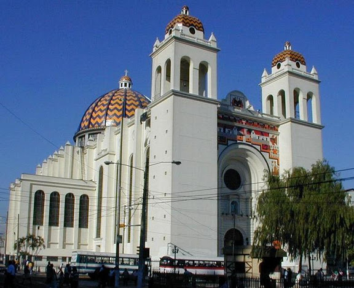

Turismo de Aventura


15 de Enero de 2017
San Salvador, El Salvador
Catedral Metropolitana
Se dice que, a finales del siglo XVI, se elevó una Iglesia dedicada al Divino Salvador del Mundo en el misterio de su Transfiguración, pero los constantes temblores no permitían ampliarla ni conservarla. Conocida como la “Parroquia de San Salvador” o también como “Parroquia El Sagrario” tenía como curas rectores a José Matías Delgado y a Nicolás Aguilar en 1808, quienes históricamente se conocen como los próceres independentistas. Según los registros, fue elevada a catedral en 1842. A causa de las inclemencias del tiempo, este templo se arruinó en abril de 1854 y las autoridades capitalinas se vieron obligadas a trasladarse temporalmente al municipio de Cojutepeque. Años más tarde, otro seísmo redujo a escombros lo que quedaba de la catedral en marzo de 1873. Esta vez, el gobierno eclesiástico se trasladó a la Nueva San Salvador.En septiembre de 1877, se tuvieron iniciativas de edificar esta iglesia por segunda vez. Esta se situó en la antigua ubicación del convento y templo de Santo Domingo al frente de la Plaza Barrios. Los datos históricos detallan que, en 1888, se inauguró el segundo edificio con estilo romano.Se construyó de maderas finas, algunas traídas del Líbano con el propósito que fuese más flexible ante los movimientos telúricos. Se caracterizaba por albergar bellas imágenes, ornamentaciones y retablos pintados por artistas salvadoreños. Sin embargo, se redujo a cenizas tras un imparable incendio el 8 de agosto de 1951.

Perfil del Autor
Correo: ronaldpineda@gmail.com
Facebook:ronald.pinedamolina
Pais: El Salvador